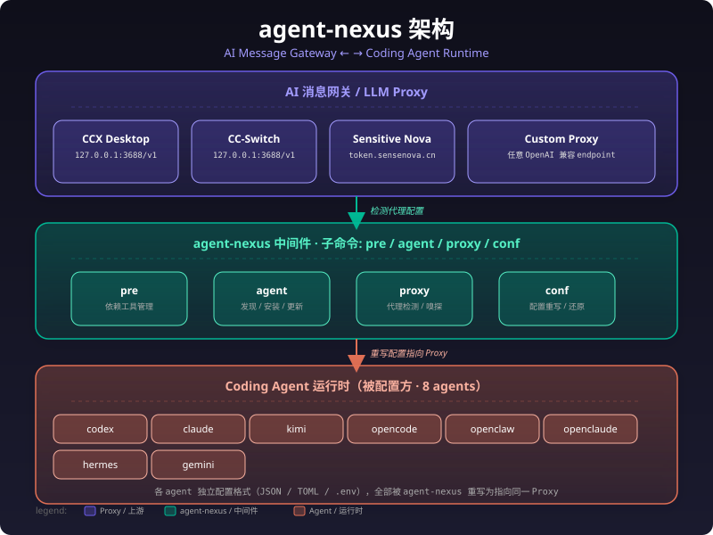
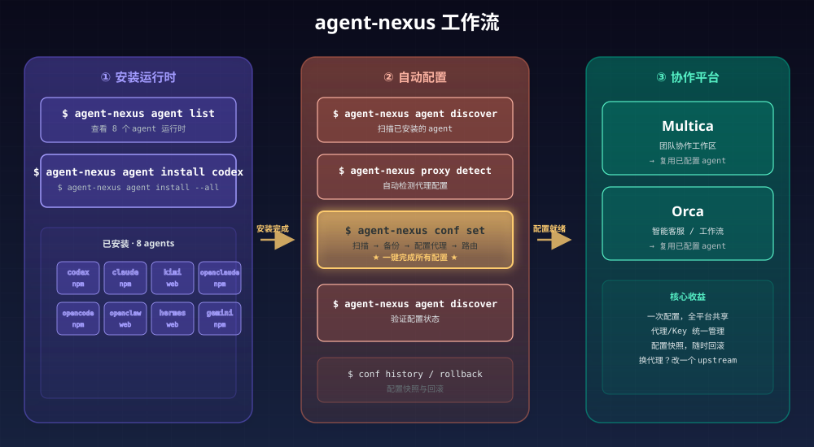
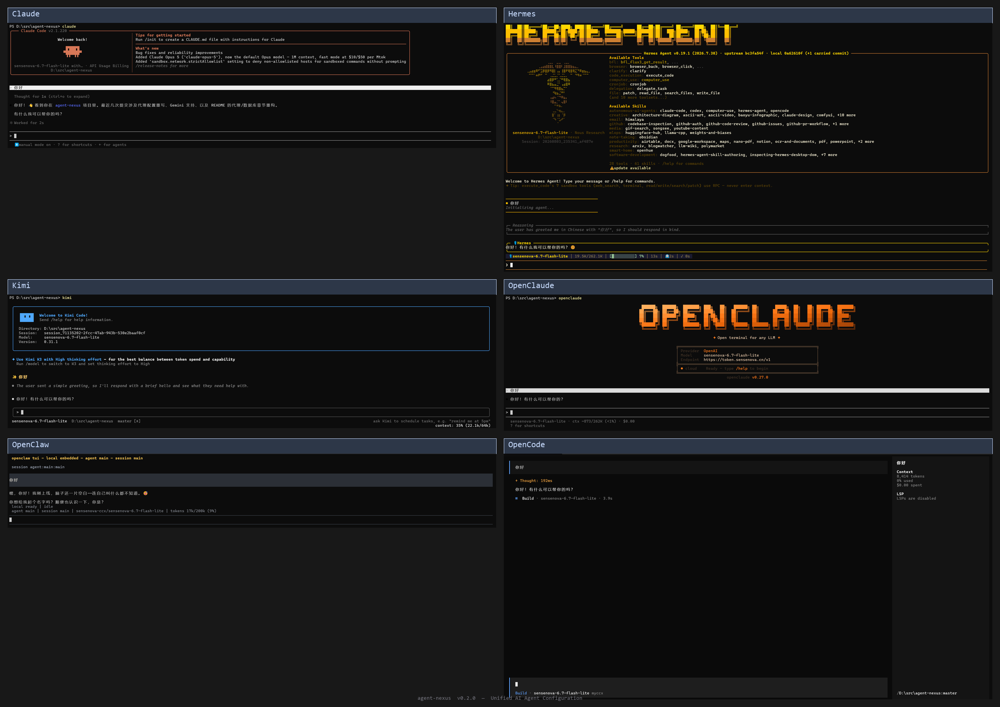

agent-nexus — AI Agent 配置自动化工具
一句话
agent-nexus 是 coding agent 配置领域的 /etc/hosts：一条命令，把散落在本机各处的 LLM endpoint 和 API Key 统一重定向到一个 AI 消息网关。
agent-nexus 支持 8 个可安装的 agent 运行时，均为 CLI 工具。agent list 是权威列表。
架构

- AI 消息网关（proxy）：统一上游端点，负责模型路由、计费、限流。
- Agent 运行时：你日常使用的 coding 工具（codex, claude, kimi, hermes 等），各有配置格式，但本质上都是"调一个 LLM endpoint"。
- agent-nexus：中间件 / 配置中枢。扫描本机 agent → 检测代理 → 自动备份 → 写入配置 → 建立模型路由。
- 下游协作平台（Multica 等）：直接复用已配置好的 agent，无需各自重复配置代理和 Key。
工作流
① 检查运行时依赖 → agent-nexus pre check / install
② 安装 Agent 运行时 → agent-nexus agent list / install
③ 统一配置所有 Agent → agent-nexus conf set --agent all --db auto
④ 验证配置 → agent-nexus agent discover

完整自动化链路（详见 MANUAL.md）：
| 阶段 | 动作 | 命令 |
|---|---|---|
| ① 检查运行时依赖 | node/npm、python/pip、git | agent-nexus pre check |
| ② 安装 Agent 运行时 | codex/claude/kimi 等 8 个 agent | agent-nexus agent install codex |
| ③ 统一配置 | 选取 DB 网关 → 备份 → 添加/映射模型 → 写入配置 | agent-nexus conf set --agent all --db auto |
| ④ 验证 | 扫描 + 显示配置状态 | agent-nexus agent discover |
快速开始
# 1. 检查并安装运行时依赖
agent-nexus pre check
agent-nexus pre install
# 2. 安装需要的 agent 运行时
agent-nexus agent list
agent-nexus agent install codex
agent-nexus agent install claude
# 3. 嗅探 AI 网关并保存到 DB（探测模型并确认是否有效）
agent-nexus proxy detect --url https://api.example.com/v1 --key sk-xxx
# 3b. 或者自动检测本机代理（CCX Desktop / CC-Switch），自动保存
agent-nexus proxy detect
# 3c. 如需手动添加已知的网关记录
agent-nexus db add -u https://api.example.com/v1 -k sk-xxx
# 4. 统一配置所有已安装的 agent（自动备份 → 添加/映射模型 → 写入配置）
agent-nexus conf set --agent all --db auto
# 5. 验证
agent-nexus agent discover
agent-nexus agent discover -v # 显示每个 agent 的模型支持详情
命令总览
agent-nexus [command]
命令组：
agent Agent 管理（发现、安装、卸载、更新、配置、模型）
conf 配置管理（备份、快照、回滚、分支、统一配置入口）
proxy AI 消息网关管理（检测、路由、嗅探、代理数据库）
pre 检查/安装 agent 运行时依赖工具
completion 生成 shell 自动补全脚本
全局选项：
--url 直接指定代理 URL（覆盖自动检测）
--key 直接指定代理 API Key（覆盖自动检测）
--home 指定用户主目录（默认自动检测）
详细用法见 MANUAL.md。
支持的 Agent（8 个可安装运行时）
| Agent | 类型 | 协议 | 安装方式 | 说明 |
|---|---|---|---|---|
| codex | CLI | OpenAI Compatible | npm @openai/codex |
任意上游模型 |
| claude | CLI | OpenAI Compatible | npm @anthropic-ai/claude-code |
任意上游模型 |
| kimi | CLI | ACP | 官方安装脚本 | 需代理路由映射 |
| opencode | CLI | OpenAI Compatible | npm opencode-ai |
任意上游模型 |
| openclaw | CLI | OpenAI Compatible | 官方安装脚本 | 任意上游模型 |
| openclaude | CLI | OpenAI Compatible | npm @gitlawb/openclaude |
.env 格式配置 |
| hermes | CLI | ACP | 官方安装脚本 | 需代理路由映射 |
| gemini | CLI | 无 | npm @google/gemini-cli |
Google auth（OAuth/API key） |

Agent 运行界面一览（2×3 宫格：Claude、Hermes、Kimi、OpenClaude、OpenClaw、OpenCode）
安装 Agent 运行时
agent-nexus 自带安装器，支持 npm、pip、官方下载页、GitHub release 等多种方式，根据平台（Windows/macOS/Linux）自动选择：
# 查看可安装的 agent
agent-nexus agent list
# 安装单个 agent
agent-nexus agent install codex
# 安装全部 CLI agent
agent-nexus agent install --all
# 卸载 / 更新
agent-nexus agent uninstall codex
agent-nexus agent update codex
安装后运行 agent-nexus agent discover 确认已安装 agent 列表和配置状态。
命令设计原则
agent-nexus 按职责划分三类命令，各司其职：
| 命令 | 职责 | 典型操作 |
|---|---|---|
proxy |
模型信息与嗅探 | 嗅探网关、检测代理、查询模型列表、检查有效性 |
conf |
配置管理 | 统一配置入口、备份、快照、回滚、分支 |
db |
存储层（底层） | 直接操作数据库，一般不通过代码调用 |
proxy 和 conf 通过 --db flag 引用底层存储，通常用户无需直接操作 db。
Proxy 命令：AI 网关管理
proxy 命令负责 AI 网关（proxy）的发现、嗅探和有效性检查。conf set --db auto 需要先有可用的网关记录，最常见的方式是运行 proxy detect 自动检测本机代理并保存：
# 自动检测本机代理（CCX Desktop / CC-Switch），嗅探模型并保存到数据库
agent-nexus proxy detect
# 探测指定 AI 网关
agent-nexus proxy detect --url https://api.example.com/v1 --key sk-xxx
# 从数据库读取已保存的网关模型列表
agent-nexus proxy detect --db 1
agent-nexus proxy detect --db all
# 仅显示配置信息，不嗅探
agent-nexus proxy detect --no-sniff
# 显示模型路由表
agent-nexus proxy route
# 检查已保存代理是否仍然有效
agent-nexus proxy check <id>
agent-nexus proxy check --all
提示：
proxy detect嗅探成功后会自动保存到数据库，conf set --db auto即可直接使用。
存储层：db 命令
db 是底层存储操作，直接管理 SQLite 数据库中的 AI 网关信息和配置快照，一般作为手动应急手段使用，不推荐日常操作：
# 手动添加网关记录（不验证连通性，不推荐作为首选）
agent-nexus db add -u https://api.example.com/v1 -k sk-xxx
# 列出 / 查询 / 查看记录
agent-nexus db list
agent-nexus db query example.com
agent-nexus db show 1
# 删除记录
agent-nexus db rm 1
agent-nexus db rm --all
统一配置入口：conf set
agent-nexus conf set 是唯一的配置入口，收紧了所有添加/映射大模型的操作：
# 配置所有已安装 agent，自动选取 DB 中 id 最小的 AI 网关记录
agent-nexus conf set --agent all --db auto
# 只配置部分 agent
agent-nexus conf set --agent codex,claude --db auto
# 指定 DB 中的网关记录编号
agent-nexus conf set --agent all --db 2
# 预览模式（不实际写入）
agent-nexus conf set --agent all --db auto --dry-run
# --db 必选，不传会报错
# agent-nexus conf set --agent all # ❌ 不传 --db 将失败
参数说明
| 参数 | 说明 |
|---|---|
--agent |
指定 agent（逗号分隔），all 代表所有可配置 agent |
--db |
AI 网关来源（必选）：auto=DB 中 id 最小记录，<N>=指定 id |
--dry-run |
预览模式，不实际写入 |
模型添加 vs 映射
conf set 根据 agent 类型自动选择策略：
| Agent 类型 | 策略 | 说明 |
|---|---|---|
| 自定义模型（codex/claude/deepseek/opencode/...） | 自动添加 | 从 DB 网关记录的 upstream 模型列表中选取最佳匹配模型，写入 agent 配置 |
| 重定向模型（kimi/hermes/qoder/trae） | 映射 | 将 agent 原生模型名映射到 upstream 模型，写入 proxy_model_mappings 表 |
映射算法（4 步）： 1. 关键字匹配 — agent 名（如 kimi）子串匹配 upstream 模型名 2. 默认模型匹配 — 默认模型名关键词在 upstream 中查找 3. 多模型轮询 — 多原生模型 agent 尽量分配不同 upstream 模型 4. 兜底 — 取首个 upstream 模型
自动备份
配置写入前自动为所有已安装且可配置的 agent创建全量快照（存 DB）：
- 快照带名称：
--backup-name "切换 gpt-5.5"手动命名；留空自动用时间戳 - 快照存储：DB 表
backup_snapshots+backup_config_entries - 查看快照：
agent-nexus conf list（显示名称、时间、ID） - 恢复快照：
agent-nexus conf restore "<快照名称>"
代理支持
- CCX Desktop（自动检测）：读取
~\AppData\Roaming\ccx-desktop\.config\config.json和.env，默认监听127.0.0.1:3688 - CC-Switch（自动检测）：读取
~\AppData\Roaming\cc-switch\.config\config.json和.env - 自定义代理（手动）：通过
--url+--key指定任意代理地址 - 代理数据库：通过
proxy detect嗅探并保存代理配置（推荐，可确认有效性）；或db add手动添加（不验证连通性）
Proxy 命令速查
proxy 命令组 — AI 消息网关管理
# 统一入口：检测 + 嗅探 + 查询，通过 flag 切换模式
agent-nexus proxy detect # 自动检测本机代理 + 嗅探模型
agent-nexus proxy detect --url <url> --key <key> # 探测指定 AI 网关
agent-nexus proxy detect --db <N|all> # 从数据库读取已保存的网关模型
agent-nexus proxy detect --no-sniff # 仅显示配置，不嗅探
agent-nexus proxy detect -v # 详细模式，显示完整模型列表
# 显示模型路由表：agent → 原生模型 → 目标上游模型 [来源]
agent-nexus proxy route
# 检查已保存代理是否仍然有效
agent-nexus proxy check <id>
agent-nexus proxy check --all
db 命令组 — 代理数据库（SQLite）
agent-nexus db add -u <url> -k <key> # 嗅探网关并保存到数据库
agent-nexus db list # 列出所有已保存的代理记录
agent-nexus db show <id> # 查看记录详情（含完整 Key 和模型列表）
agent-nexus db query [filter] # 按 ID 精确查询 或 URL 子串模糊查询
agent-nexus db rm <id> # 删除指定记录
agent-nexus db rm --all # 清空所有记录
配置版本化管理
类 Git 的配置快照系统，支持快照、分支、差异对比和回滚：
agent-nexus conf backup --name "我的快照" --agents all # 手动备份，带名称
agent-nexus conf backup --name "测试" --agents codex # 备份指定 agent
agent-nexus conf list # 列出所有快照（显示名称）
agent-nexus conf restore "我的快照" # 按名称恢复
agent-nexus conf restore latest # 恢复最新快照
agent-nexus conf restore <UUID> # 按 ID 恢复
agent-nexus conf backup --name "我的快照" --force # 覆盖同名快照
快照命名：conf backup --name "xxx" 给快照起个人类可读的名称，conf restore "xxx" 直接按名称恢复，不用记 UUID。留空时自动用时间戳。
旧命令
conf bak、conf show、conf history、conf rollback已隐藏，请迁移到conf backup/conf list/conf restore。
查看模型信息
# 显示所有 agent 原生支持的模型
agent-nexus agent models
# 查询特定 agent
agent-nexus agent models --name codex
查询上游模型列表
配置前确认代理当前实际接入的模型：
agent-nexus conf upstream-models
agent-nexus conf upstream-models --url http://127.0.0.1:3688/v1 --key sk-xxx
项目结构
agent-nexus/
├── main.go # 入口
├── go.mod / go.sum # Go 模块定义
├── cmd/
│ ├── root.go # Cobra CLI 命令定义
│ ├── conf_set.go # conf set 命令定义 + DB 流程
│ ├── conf_reset.go # conf set --reset 恢复流程
│ ├── conf_snapshot.go # 共享快照函数（takeSnapshot / baselineIfNeeded）
│ ├── conf_utils.go # resolveDBArg / resolveAgentList / parseModelsStr 等
│ ├── runconfbackup.go # conf backup
│ └── runconfrestore.go # conf restore
└── internal/
├── agent/ # 各 agent 配置写入器（可插拔）
├── backup/ # 备份逻辑
├── color/ # 终端彩色输出
├── db/ # SQLite 代理配置数据库
├── discover/ # 自动发现 agent
├── install/ # agent 运行时安装
├── model/ # 模型路由表构建
├── pre/ # 运行时依赖检查与安装
├── proxy/ # 代理检测（CCX / CC-Switch / 自定义）
├── sniff/ # LLM endpoint 嗅探
└── versioning/ # 配置版本化（快照/分支/差异）
扩展新 Agent
实现 agent.ConfigWriter 接口并注册到 WriterRegistry 即可，详见 MANUAL.md。
License
MIT